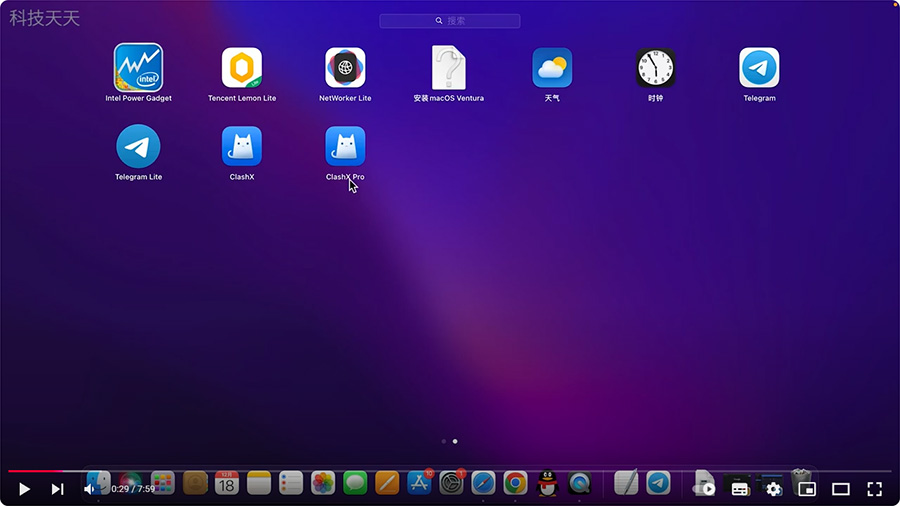

Apple tv 4k 2022 科学上网方法，国内使用，非常简单，使用ClashX Pro，不用软路由。
用MAC电脑安装ClashX Pro，共享给 Apple TV 使用。
ClashX Pro下载>>
步骤：
1、在Mac电脑上安装 Clash X Pro 软件
2、添加订阅节点
3、将Mac的 IP 改成手动
4、将MAC的 IP 和 DNS 记下来备用
5、打开 Apple TV 网络设置
6、将 Apple TV 的 路由器IP 改成 Mac的IP，DNS 改成 MAC 的 DNS
7、Mac电脑不能关机，即可实现科学上网
